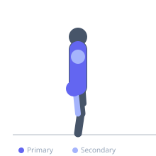
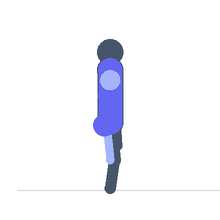

Exercise guide / Medicine Ball Slam
Medicine Ball Slam
The medicine ball slam is a full-body plyometric exercise in which a slam ball or medicine ball is raised overhead and then slammed forcefully into the ground using a whole-body hip hinge. The simultaneous extension and flexion chain, from full overhead reach to rapid hip hinge and forceful arm drive downward, trains the anterior chain's ability to rapidly generate and transfer force. The exercise is used for power development, conditioning, and as an outlet for high-intensity effort.
Primary muscles
rectus abdominis
latissimus dorsi
gluteus maximus
Secondary muscles
trapezius upper
deltoid anterior
biceps femoris long head
Stabilizers
transverse abdominis
erector spinae
Equipment
Slam Ball
Optional
Medicine Ball


Starting position
- Stand with feet shoulder-width apart, holding the slam ball with both hands at hip height.
Setup
- Use a slam ball (non-bouncing) on a hard floor or rubber surface. Ensure adequate overhead and surrounding clearance.
Steps
- Step 1: Hold the slam ball at hip height with both hands.
- Step 2: Raise the ball overhead by extending the hips and reaching the arms fully overhead.
- Step 3: Immediately initiate a powerful hip hinge and simultaneous arm drive downward.
- Step 4: Slam the ball into the floor as forcefully as possible, hinging deeply at the hips and bending the knees slightly.
- Step 5: Pick the ball up (or catch the rebound if using a medicine ball) and repeat.
Coaching cues
- Reach high — then slam hard
- Hinge at the hip — not just a crunch
- Put everything into it
Breathing
- Exhale forcefully as the ball is slammed. Inhale on the way back up.
Range of motion
- Full overhead extension. Full hip hinge at the bottom.
Tempo
- Maximum effort on each slam. 8–12 reps for conditioning. 5–8 for maximum power.
Common mistakes
- Only using the arms — the hip hinge and trunk flexion must generate most of the force
- Releasing the ball at the wrong point — release as arms reach the bottom of the arc
- Not reaching fully overhead at the top — shortens range and reduces force potential
Safety
- Use a slam ball (not a standard rubber medicine ball that may bounce back unpredictably at high force).
- Ensure nobody is standing nearby — a ball can bounce sideways.
Training
- power: 5–8 reps
- endurance: 10–15 reps
- power: 3–5 sets
- endurance: 3–5 sets
- Rest: {'power': 120, 'endurance': 60}